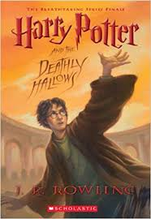

Author:J.K Rolling
Character:Harry,Hermione,Granger,Lord
Genres:Drama,Fantasy Fiction
Plot
Further information: Fictional universe of Harry Potter The central character in the series is Harry Potter, a boy who lives in the fictional town of Little Whinging, Surrey with his aunt, uncle, and cousin – the Dursleys – and discovers at the age of eleven that he is a wizard, though he lives in the ordinary world of non-magical people known as Muggles.[8] The wizarding world exists parallel to the Muggle world, albeit hidden and in secrecy. His magical ability is inborn, and children with such abilities are invited to attend exclusive magic schools that teach the necessary skills to succeed in the wizarding world.[9] Harry becomes a student at Hogwarts School of Witchcraft and Wizardry, a wizarding academy in Scotland, and it is here where most of the events in the series take place. As Harry develops through his adolescence, he learns to overcome the problems that face him: magical, social, and emotional, including ordinary teenage challenges such as friendships, infatuation, romantic relationships, schoolwork and exams, anxiety, depression, stress, and the greater test of preparing himself for the confrontation that lies ahead in wizarding Britain's increasingly-violent second wizarding war.[10] Each novel chronicles one year in Harry's life[11] during the period from 1991 to 1998.[12] The books also contain many flashbacks, which are frequently experienced by Harry viewing the memories of other characters in a device called a Pensieve. The environment Rowling created is intimately connected to reality. The British magical community of the Harry Potter books is inspired by 1990s British culture, European folklore, classical mythology and alchemy, incorporating objects and wildlife such as magic wands, magic plants, potions, spells, flying broomsticks, centaurs and other magical creatures, and the Philosopher's Stone, beside others invented by Rowling. While the fantasy land of Narnia is an alternate universe and the Lord of the Rings' Middle-earth a mythic past, the wizarding world of Harry Potter exists parallel to the real world and contains magical versions of the ordinary elements of everyday life, with the action mostly set in Scotland (Hogwarts), the West Country, Devon, London, and Surrey in southeast England.[13] The world only accessible to wizards and magical beings comprises a fragmented collection of overlooked hidden streets, ancient pubs, lonely country manors, and secluded castles invisible to the Muggle population.
Supplementary works
Harry Potter and the Cursed Child Main article: Harry Potter and the Cursed Child Harry Potter and the Cursed Child is a two-part West End stage play.[23] It was written by Jack Thorne, based on a story by J. K. Rowling, Thorne and director John Tiffany. The play opened on 30 July 2016 at the Palace Theatre, London, England. The script was released on 31 July 2016.[24] The story is set nineteen years after the ending of Harry Potter and the Deathly Hallows and follows Harry Potter, now a Ministry of Magic employee, and his younger son Albus Severus Potter. The play's official synopsis was released on 23 October 2015:[25] It was always difficult being Harry Potter and it isn't much easier now that he is an overworked employee of the Ministry of Magic, a husband, and father of three school-age children. While Harry grapples with a past that refuses to stay where it belongs, his youngest son Albus must struggle with the weight of a family legacy he never wanted. As past and present fuse ominously, both father and son learn the uncomfortable truth: sometimes, darkness comes from unexpected places.
Books Name
- The Philosopher's Stone (1997)
- The Chamber of Secrets (1998)
- The Prisoner of Azkaban (1999)
- The Goblet of Fire (2000)
- The Order of the Phoenix (2003)
- The Half-Blood Prince (2005)
- The Deathly Hallows (2007)
- harry potter quiz house
- harry potter quizzes and tests
- harry potter quiz pottermore
- harry potter quiz buzzfeed
- more harry potter quizzes
- harry potter quiz which character are you
- harry potter quiz playbuzz
- harry potter quiz easy